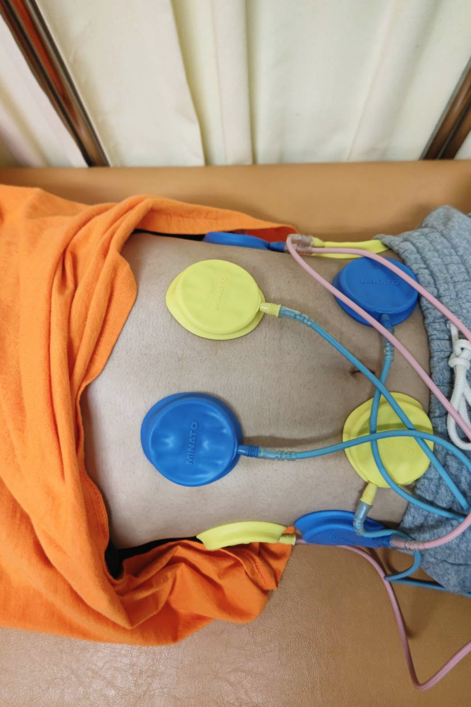

竹下整骨院
竹下整骨院は、福岡市博多区竹下で地域の皆さまに寄り添い、 肩こり・腰痛・スポーツ障害・交通事故施術など、 痛みの原因を丁寧に確認し、根本改善を目指した施術を行っています。
① 来院 → ② カウンセリング → ③ 検査 → ④ 施術 → ⑤ アドバイス
初回：約40〜50分 ／ 2回目以降：約20〜30分
動きやすい服装であればOK（スカートでも施術可能）
電話またはエキテン予約をご利用ください。
店舗前に 3台 分ございます。

寝たままインナーマッスルを鍛える人気メニュー。 姿勢改善・腰痛予防・代謝アップにおすすめです。
▶ EMS 30分 1,000円
疲れ・不眠・美肌に人気のスイソニア（水素吸入）も導入しています。 活性酸素を除去し、体の内側からコンディションを整えます。
▶ 詳しく見る| 曜日 | 午前 | 午後 |
|---|---|---|
| 月 | 8:30〜12:30 | 14:30〜19:30 |
| 火 | 8:30〜12:30 | 14:30〜19:30 |
| 水 | 8:30〜12:30 | 午後休診 |
| 木 | 8:30〜12:30 | 14:30〜19:30 |
| 金 | 8:30〜12:30 | 14:30〜19:30 |
| 土 | 8:30〜13:00 | 午後休診 |
| 日・祝 | 休診 | |
住所：福岡市博多区竹下4丁目6-14 FORT-S 1階
電話：092-483-7565
店舗前に 3台 分ございます。